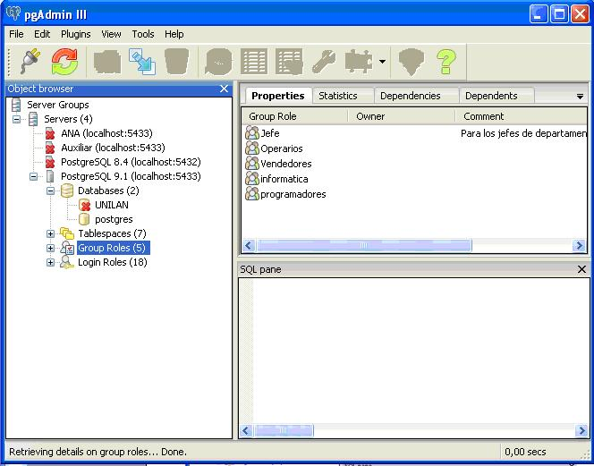
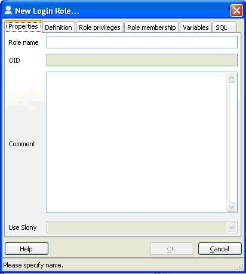

4.1 - Gestión de roles: utilización como usuarios
Un rol es
una entidad capaz de recoger permisos y privilegios. Uno de estos permisos es
el de conexión (login). En este sentido sería como un usuario, eso sí,
completamente independiente de los usuarios de S.O.
Este rol o
usuario (PostgreSQL mantiene en cierta medida la
nomenclatura de usuarios) será un nombre con una posible contraseña (que
dependiendo del método de autenticación, servirá para controlar el acceso) que
tendrá distintos permisos para crear tablas y otros objetos en una determinada
Base de Datos, utilizarlos para hacer consultas o actualizaciones,...
Aparte
de esto, los permisos de un rol pueden asignarse a otro. Entonces es como si el segundo
rol pertenecerá al primero, y el primero funciona como un grupo.
Los roles no están incluidos en ningún base de datos particular.
Por tanto son globales a toda la instalación de PostgreSQL (la gran Base de
Datos, el cluster).
Los roles, tanto si pueden hacer login como si no, se guardarán en
la tabla pg_authid (en
caso de usuarios con la contraseña encriptada o no). Por comodidad (y
compatibilidad con versiones anteriores) hay unas vistas a que pueden hacer más
cómoda la consulta.
·
pg_roles contiene
todos los roles.
·
pg_user contiene
los usuarios, es decir, los roles a que pueden hacer un login.
·
pg_shadow contiene
también las contraseñas.
·
pg_group contiene
los grupos, es decir, los roles que no pueden hacer login.
Por tanto la primera manera de gestionar los roles sería manipular
directamente las tablas o vistas, aunque parece demasiado laborioso.
Vamos a ver las maneras normales de crear roles.
CREATE ROL
Deberemos ejecutar esta sentencia SQL desde un usuario con permiso
para crear roles, y conectado a cualquiera B.D.
La sintaxis es la siguiente:
CREATE ROLE nombre [
[ WITH ] opción [ ... ] ]
donde la opción puede ser (las subrayadas son las opciones por
defecto):
SUPERUSER
| NOSUPERUSER permiso
de superusuario (por defecto no)
CREATEDB
| NOCREATEDB permiso
para crear B.D (por defecto no)
CREATEROLE
| NOCREATEROLE permiso para crear usuarios (por defecto no)
CREATEUSER
| NOCREATEUSER similar
a anterior (obsoleta)
INHERIT | NOINHERIT determina si el rol hereda las propiedades de los grupos (roles) a
los que pertenece
LOGIN
| NOLOGIN permiso
para conectarse (será un usuario)
CONNECTION
LÍMIT connlimit si
un usuario puede conectarse esto especifica cuantas conexiones
concurrentes puede haber (por defecto -1, que quiere decir ilimitadas)
[ENCRYPTED |
UNENCRYPTED] PASSWORD 'password' contraseña del usuario que puede ir encriptada o no
VÁLIDO
UNTIL 'fecha' fecha
de caducidad del usuario
IN ROL rolename [, ...] roles (grupos) a los que pertenece
IN
GROUP rolename [, ...] similar
al anterior (obsoleta)
ROLE rolename [, ...] roles que pertenecerán a este rol (grupo)
USER
rolename [, ...] similar
al anterior (obsoleta)
ADMIN
rolename [, ...] similar
al anterior pero además tendrá permiso para administrarlo (WITH
ADMIN
OPTION)
Para mantener la compatibilidad
con versiones anteriores tenemos la sentencia equivalente:
CREATE USER nombre [ [ WITH ] opción [ ... ] ]
donde por defecto sí que tendrá el privilegio LOGIN.
Así, por ejemplo, desde una conexión por PSQL como
posgres a xarxa podemos
hacer:
CREATE ROLE xar1 LOGIN;
--puede conectarse, no tiene password y no puede crear ni usuarios
ni B.D.
CREATE USER xar2;
--puede conectarse, no tiene password y no puede crear ni usuarios
ni B.D.
CREATE ROLE xar3
LOGIN PASSWORD 'xar3';
--puede conectarse, tiene password, no puede crear ni
usuarios
ni B.D.
CREATE ROLE xar4
LOGIN PASSWORD 'xar4' CREATEDB;
--puede conectarse, tiene password, no puede crear usuarios,
pero sí B.D.
CREATE ROLE xar5
LOGIN PASSWORD 'xar5' CREATEDB CREATEROLE;
--puede conectarse, tiene password, y puede crear usuarios y
B.D.
CREATE ROLE xar6
LOGIN PASSWORD 'xar6' VALID UNTIL '31-05-2010';
--puede conectarse hasta el 31 de mayo a las 0:00, tiene password
y no puede crear ni usuarios ni B.D.
Si queremos modificar algún aspecto del usuario, lo haremos con la
sentencia
ALTER ROLE nombre [
[ WITH ] opción [ ... ] ]
donde las opciones son las mismas que en CREATE ROLE, por ejemplo:
ALTER ROLE xar2
PASSWORD 'xar2';
aunque esta sentencia tiene más utilidades:
ALTER ROLE nombre RENAME
TO nombre_nuevo
o
ALTER ROLE nombre SET
parámetro TO valor
ALTER ROLE nombre RESET
parámetro
que servirán para inicializar determinados parámetros a un
determinado valor, para el usuario.
Si queremos eliminar un rol, sencillamente
DROP ROLE nombre
Evidentemente existen las sentencias sinónimas ALTER USER y DROP USER
*create user
Otra
manera de crear roles, esta vez desde el sistema (sin entrar en PostgreSQL). Es
un fichero ejecutable que proporciona PostgreSQL, y que nada más podrán ejecutar
los superusuarios PostgreSQL. Si no ponemos la opción -U se
intentará ejecutar como un
usuario
PostgreSQL con el mismo nombre que el usuario de S.O. que está ejecutando este ejecutable.
En principio, como de momento nada más tenemos un superusuario (más
concretamente un usuario con permiso para crear usuarios) si queremos tener
éxito deberemos ejecutarlo como usuario de S.O. posgres, pero si estamos en una consola como un usuario
distinto podemos esquivarlo con la opción -U.
Más adelante pondremos un ejemplo.
La sintaxis es:
create user [opciones]
nombre
Y en las opciones, entre otros, podremos poner:
-s el
nuevo usuario será superusuario (si no lo ponemos nos lo pedirá)
-S el
nuevo usuario no será superusuario
-d el
nuevo usuario podrá crear bases de datos (si no lo ponemos nos lo pedirá)
-D el
nuevo usuario no podrá crear bases de datos
-r el
nuevo usuario podrá crear roles (si no lo ponemos nos lo pedirá)
-R el
nuevo usuario no podrá crear roles
-l el
nuevo usuario podrá conectarse (por defecto)
-L el
nuevo usuario no podrá conectarse
-P pedirá la contraseña para el nuevo usuario
Aparte de estas opciones podemos poner otras, similares a las
opciones de psql
-h nombre nombre
del servidor a que nos conectamos (por defecto local)
-p port puerto del servidor a través del que nos conectamos
(por defecto 5432)
-U nombre nombre del usuario que hace la operación (no el que se
crea)
Así, si en la consola no estamos como usuario posgres, podemos
cambiar a este usuario, o sencillamente hacer:
create user -U posgres
Aquí tenemos algunos ejemplos. Los dos primeros hacen exactamente
el mismo. Hemos puesto tanto las sentencias de creación como los comentarios
que salen, como las contestaciones. Observa que la contraseña que pide es la de
quien ejecuta el orden. Por tanto deberemos ejecutarlo como posgres y
poner su contraseña. En el último también pide la contraseña que se quiere poner
al usuario que se va a crear.
create user -h 127.0.0.1 xar7
¿Será el nuevo rol un superusuario? (s/n) n
¿Debe permitírsele al rol la creación de bases de datos? (s/n)
n
¿Debe permitírsele al rol la creación de otros rolas? (s/n)
n
Contraseña:
CREATE ROLE
create user -h
127.0.0.1 -S -D -R xar7
Contraseña:
CREATE ROLE
create user -h
127.0.0.1 -S -P xar8
Ingrese la contraseña para el nuevo rol:
Ingrésela nuevamente:
¿Debe permitírsele al rol la creación de bases de datos? (s/n)
n
¿Debe permitírsele al rol la creación de otros rolas? (s/n) n
Contraseña:
CREATE ROLE
Nota
Los
ejercicios anteriores están para que funcionen
igual tanto en Windows como en
Linux.
Si en Windows no ponemos el host (-h 127.0.0.1)
funcionaría exactamente igual.
En
cambio, en Linux si no ponemos el host no nos pedirá la contraseña, pero funcionará
bien (siempre que lo ejecutamos como posgres).
La explicación de todo esto está en el punto 4.5 Autenticación de
usuarios.
No existe el programa alteruser,
para modificar un rol, pero sí dropuser por
eliminarlo
dropuser [opciones]
nombre
donde las opciones son algunas del createuser, con el mismo
significado: -h -P -U -W
dropuser xar7
Contraseña:
DROP ROLE
Herramientas gráficas
Para dar de alta un rol utilizado como un usuario con PgAdmin deberemos ir a la opción Roles de entrada (Login Roles) habiéndonos autenticado como un usuario (un rol) que puede crear usuarios (roles), que en principio puede ser posgres.

Podemos ver que ya tenemos 5 roles de entrada creados (si ya has ejecutado las sentencias del apartado anterior, también te aparecerán xar1 ... xar8), y que son independientes de las Bases de Datos, mejor dicho, no están dentro de ellas.
Si intentamos crear un usuario nuevo, veremos que tenemos todas
las posibilidades que teníamos en la creación por SQL. Y además no nos deja
tocar la opción Puede entrar (Login), ya que es un rol utilizado como un usuario.

De la misma manera podremos modificar un usuario (yendo a sus propiedades) o eliminarlo (a la papelera!).
Estos roles de entrada o usuarios son absolutamente independientes de los usuarios del S.O. (que ya se encarga él de que se autentiquen). Puede haber usuarios de ambos tipos con el mismo nombre, cosa que puede facilitar la autenticación, pero no tiene porque ser así. Perfectamente puede haber usuarios de la B.D. que no existen en el S.O. (y al revés, evidentemente). Pero si no hacemos nada más, estos usuarios no podrán conectarse. En el punto 4.5 trataremos el problema de la autenticación.